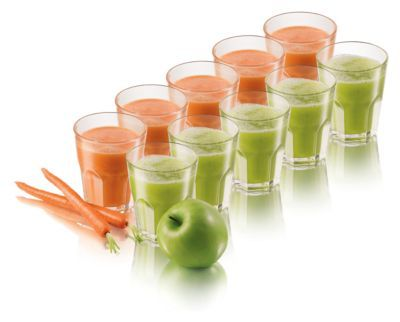
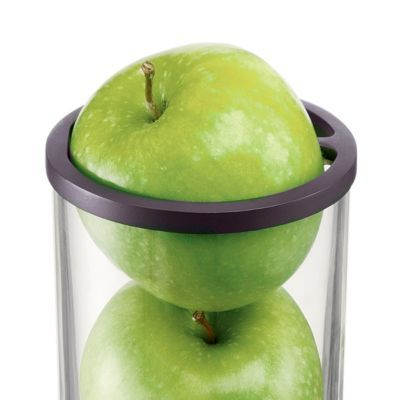
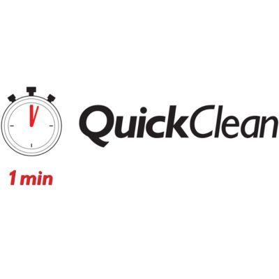

Scurta descriere
Storcator de fructe si legume Philips Viva Collection HR1855/90, 700 W, Recipient suc 0.8 l, Recipient pulpa 1.2 l, 1 Viteza, Tub de alimentare 75 mm, Alb/Rosu
Storcatorul de fructe Philips Viva Collection extrage si mai mult suc din fructele si legumele dumneavoastra
Toata pulpa este colectata intr-un loc pentru o curatare usoara
Pulpa va fi colectata in singurul loc in care ar trebui sa se afle: in recipientul pentru pulpa al storcatorului dumneavoastra de fructe de la Philips. Prin urmare, nu mai este nevoie sa indepartati pulpa de pe alte componente, cum ar fi de pe capac. Datorita designului rotund si suprafetelor netede, fara unghiuri ascunse si crapaturi, pulpa este la indemana, iar recipientul este mult mai usor de curatat.
Suprafete netede si usor de curatat
Storcatorul este conceput cu forme rotunde si suprafete netede pentru a facilita clatirea la robinet.
Verificare usoara a pulpei prin recipientul transparent
Bucurati-va de o experienta a stoarcerii cu adevarat interactiva. Capacul si recipientul pentru pulpa sunt transparente, astfel incat sa puteti vedea fructele si legumele in timpul stoarcerii. Puteti vedea direct cand recipientul s-a umplut, ceea ce inseamna ca trebuie sa il goliti.
Fara taiere prealabila gratie tubului de alimentare XL (75 mm)
BTubul de alimentare foarte mare, de 75 mm, va permite sa stoarceti si fructe sau legume mai mari, precum merele, morcovii si radacinile de sfecla, fara a le taia in prealabil.
Tehnologie QuickClean
Storcatorul Philips este conceput sa fie curatat usor gratie tehnologiei QuickClean. Curatarea se poate face acum intr-un minut, gratie sitei lucioase QuickClean, containerului integrat pentru pulpa si suprafetelor netede.